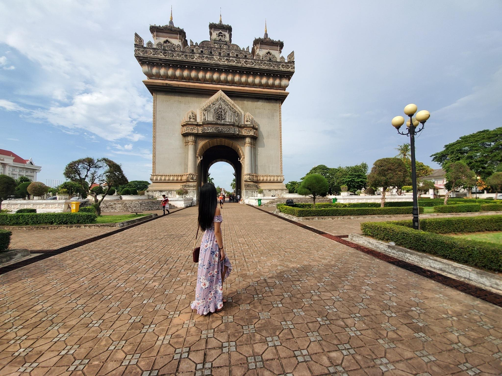

-- Things to Know About Me --
Phoenix, Arizona
It was my first time visiting the state of Arizona. I was super thrilled to see my first cactus and eat at an In-N-Out! I was there during a rainy week, so most of the time were spent inside instead of sightseeing. Though, the places I was able to visit were a couple of malls, an arcade, and a botanical garden.
Cancun, Mexico
I've been to Cancun twice, once in 2017 and the other in 2019. The first time I went was with my uncle and cousin. It was a high school graduation gift I received from my parents. The second time I went back was with my boyfriend, and we spent the spring break there relaxing and having fun! For my recent trip there, I snorkeled, swam in an underground river, and ziplined. For both of my trips, I visited the same malls and went to the Isla Mujeres again.
Check out where I visited in Cancun >>
Vientiane, Laos

I was in Laos for about 3 weeks in May. The first week was spent visiting my relatives there, and the rest of the time was with a volunteer organization called GIVE (Growth International Volunteer Excursions). I haven't visited Laos since I was in elementary school, so everyone was super excited to see me! I explored Buddha Park, Patuxai, and other local landmarks. Then with GIVE, we stayed in a small village educating them on permaculture and English.